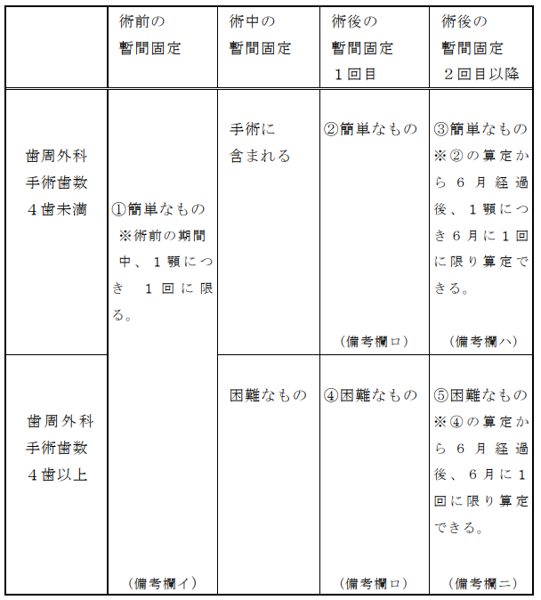

１ 簡単なもの 200点
２ 困難なもの 500点
通知
(１) 暫間固定とは、歯の支持組織の負担を軽減し、歯槽骨の吸収を防止して、その再生治
癒を促進させるため、暫間的に歯冠をレジン連続冠固定法、線結紮法（帯冠使用を含む。）又はエナメルボンドシステムにより連結固定することをいう。
(２) 「１ 簡単なもの」とは、暫間固定を行う部位において、歯周外科手術を行った歯数
が４歯未満の場合であって、固定源となる歯を歯数に含めない４歯未満の暫間固定をいう。
(３) 「１ 簡単なもの」を算定する場合は、同日又は他日にかかわらず１顎に２箇所以上
行っても１顎単位で算定する。
(４) 「２ 困難なもの」とは、暫間固定を行う部位において、歯周外科手術を行った歯数
が４歯以上の場合であって、固定源となる歯を歯数に含めない４歯以上の暫間固定をいう。なお、「２ 困難なもの」を算定する場合は、暫間固定を行う部位ごとに算定する。
(５) 歯周外科手術の術前に暫間固定を行った場合は、暫間固定を行う歯数にかかわらず
「１ 簡単なもの」により算定する。なお、術前の期間中において、１顎につき１回に限り算定する。
(６) 歯周外科手術後に必要があって暫間固定を行う場合において、歯周外科手術を行った
歯数が４歯未満の場合は「１ 簡単なもの」により算定する。ただし、術後に暫間固定を行った後、再度当該処置を行う場合は、術後に暫間固定を行った日から起算して６月経過後、１顎につき、６月に１回に限り算定できる。
(７) 歯周外科手術後に必要があって暫間固定を行う場合において、歯周外科手術を行った
歯数が４歯以上の場合は「２ 困難なもの」により算定する。ただし、術後に暫間固定を行った後、再度当該処置を行う場合は、術後に暫間固定を行った日から起算して６月経過後、１箇所につき、６月に１回に限り算定できる。
(８) 歯周外科手術と同時に行った暫間固定の「２ 困難なもの」は、所定点数により算定
する。なお、歯周外科手術と同時に行った暫間固定の「１ 簡単なもの」は、歯周外科手術の所定点数に含まれ別に算定できない。
［備考］
イ 歯周外科手術前の暫間固定（①）
固定した歯数にかかわらず「１ 簡単なもの」により算定する。なお、術前の期間中において、１顎につき１回に限り算定する。
ロ 歯周外科手術後の暫間固定(術後の暫間固定１回目)（②、④）
歯周外科手術を行った歯数が４歯未満である場合は「１ 簡単なもの」により算定し、歯周外科手術を行った歯数が４歯以上である場合は「２ 困難なもの」により算定する。なお、当該暫間固定（術後の暫間固定１回目）は、術前の暫間固定の有無及び手術日から経過期間にかかわらず算定できる。
ハ 術後の暫間固定１回目から６月経過後の暫間固定（③）
歯周外科手術を行った歯数が４歯未満である場合は「１ 簡単なもの」により算定し、１顎につき、前回暫間固定を算定した日から起算して６月に１回に限り算定できる。
ニ 術後の暫間固定１回目から６月経過後の暫間固定（⑤）
歯周外科手術を行った歯数が４歯以上である場合は「２ 困難なもの」により算定し、１箇所につき、前回暫間固定を算定した日から起算して６月に１回に限り算定できる。
(９) 歯周外科手術を行わない場合は、暫間固定を行う歯数に関わらず「１ 簡単なもの」
により算定する。なお、再度当該処置を行う場合は、前回暫間固定を行った日から起算して６月経過後、１顎につき６月に１回に限り算定できる。
(10) 暫間固定に際して印象採得、咬合採得、装着を行った場合は、口腔内装置等と同様に
算定する。
(11) 次の場合においては、「２ 困難なもの」により算定する。
イ 外傷性による歯の脱臼を暫間固定した場合
ロ 区分番号Ｊ００４－２に掲げる歯の再植術を行い、脱臼歯を暫間固定した場合
ハ 両側下顎乳中切歯のみ萌出している患者であって、外傷により１歯のみ脱臼し、元
の位置に整復固定した場合（双方の歯が脱臼している場合の整復固定は、歯科医学上認められない。）
ニ 区分番号Ｊ００４－３に掲げる歯の移植手術に際して暫間固定を行った場合
この場合においては、移植した歯１歯につき「２ 困難なもの」により算定する。
(12) 暫間固定装置を装着するに当たり、印象採得を行った場合は１装置につき区分番号Ｍ
００３に掲げる印象採得の「３ 口腔内装置等」を、咬合採得を行った場合は、１装置につき装置の範囲に相当する歯数が８歯以下のときは区分番号Ｍ００６に掲げる咬合採得の「２のロの(１) 少数歯欠損」を、装置の範囲に相当する歯数が９歯以上のときは区分番号Ｍ００６に掲げる咬合採得の「２のロの(２) 多数歯欠損」又は装置の範囲に相当する歯数が全歯にわたる場合は区分番号Ｍ００６に掲げる咬合採得の「２のロの(３) 総義歯」の所定点数を、装着を行った場合は１装置につき区分番号Ｍ００５に掲げる装着の「３ 口腔内装置等の装着の場合」の所定点数及び装着材料料を算定する。ただし、エナメルボンドシステムにより連結固定を行った場合は、区分番号Ｍ００５に掲げる装着及び装着材料料は別に算定できない。
(13) (11)の「イ 外傷性による歯の脱臼を暫間固定した場合」を除き、エナメルボンドシ
ステムにより暫間固定を行った場合の除去料は別に算定できない。